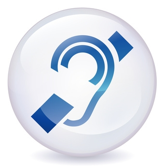
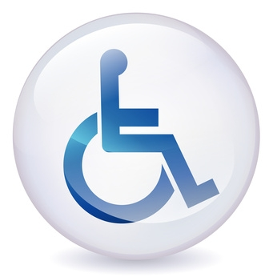

Handicap visuel
Le handicap visuel désigne les limitations fonctionnelles liées à la vision, que ce soit une cécité totale ou partielle. Les personnes atteintes de handicap visuel peuvent utiliser des aides techniques telles que les plages brailles, les synthèses vocales, ou les dispositifs d'agrandissement de texte pour accéder à l'information.

Handicap auditif
Le handicap auditif concerne les limitations fonctionnelles liées à l'ouïe, que ce soit une surdité totale ou partielle. Les personnes atteintes de handicap auditif peuvent utiliser des appareils auditifs, des boucles magnétiques ou des sous-titres pour accéder à l'information sonore.

Handicap moteur
Le handicap moteur concerne les limitations physiques comme l'incapacité à utiliser une souris ou la nécessité d'avoir une temps de réponse plus lent.
Handicap cognitif
Le handicap cognitif concerne les problèmes de troubles de l'apprentissage, l'incapacité à se souvenir ou à se concentrer sur de grandes quantités d'informations, difficultés de lecture et de compréhension, difficultés à prendre des décisions.